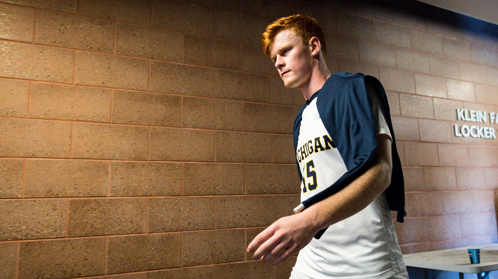

Athletics
I play on the soccer team at the University of Michigan. Growing up, I mainly played as a center midfielder. Once I came to Michgan, they converted me to a center back for my first season but now I am a center forward where I'm happiest on the field. My first two years, I received Academic All Big Ten awards and am hoping to do so again this year. In October, I received the Big Ten Offensive Player of the Week award after scoring the game-tying very late in a game against our rivals, Indiana. I then went on to assist the game-winner in overtime.
